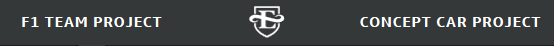
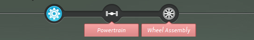
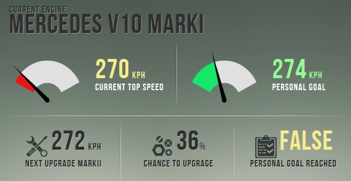

Where we will learn how to play the game
By now you might be wondering what the simulation is all about. This is an experiment that will simulate a work task between two teammates. You are going to take the role of an automotive engineer working for Mercedes-Benz. As you might know, car companies use Formula 1 racing to improve their reputation and experiment with new technologies that eventually make their way into consumer vehicles.
Engineers frequently work on more than one project at the same time. They have competing demands on their time, just like you as a student have demands on your time. You can study for an exam, take time to participate in an experiment, or take a break and watch TV. But doing one activity usually means you can't do another. Engineers make these types of decisions everyday. If an engineer has three projects they are working on, they must choose how much time to spend on each, and working on one means they can't work on another.
As an engineer, you have to decide how to spend your limited time. You have 26 work days each month, and you are working on two projects:
Your managers have allowed you to work with a teammate on parts of the F1 Car project. Together, you and your teammate will work on the company's F1 Car.
You are the First Engineer on the project. This means that you will work on the car first. Once you are done you will send the car to the Second Engineer (your teammate) who will take the car and complete it. Then you will enter the car into that month's race. Each race is a complex simulation involving the quality of the car's components, the track dynamics (weather conditions and age), and the experience of your driver. You have control over the quality of the car's components.
The engine of an F1 car affects every aspect of its performance. But for simplicity we will consider the statistic that it affects most heavily: top speed. Each engine upgrade will increase your car's top speed by 2 kph, as measured on a 1 km straightaway.
The components of the car that transform the raw power of the engine into actual movement are grouped together into the "powertrain". The powertrain most directly affects the car's linear acceleration (0-100 kph, in seconds). Obviously, lower is better. Each upgrade to the powertrain will lower your 0-100 kph by 0.2 seconds.
The tires, bearings, and disc brakes together form the wheel assembly. As you can imagine, these components will greatly affect a car's ability to maintain high speeds through corners without losing traction. This is called lateral acceleration -- and it is measured by the car's maximum speed through a 90o corner. Each upgrade will increase your car's lateral top speed by 2 km.
Your managers have made it clear that this is what they value. The 2014 concept car will be debuted at next year's Detroit Car Show, and if the car does well they will receive large bonuses.
They have told you that the more days you spend working on the concept car project, the more they will reward you. They have also said that they do not care how well the company's F1 car does in its races.
You have 26 days to work each month. You have to complete the mandatory work on the company's F1 Car. After you have completed this mandatory work, you are free to spend your remaining time however you like -- on further upgrading components of the F1 Car, or working on the Concept Car project. After your month of work is over you will send the car to the Second Engineer (your teammate) who will complete it. You will then run that month's race, see the results, and view the damage your car received. Altogether there are eight races in total, starting with the Australian Grand Prix and ending with the Singapore Grand Prix.
In order to simulate the importance your managers place on the Concept Car project, and the bonus they will offer, we will offer $20 to the participant who does the most work on the Concept Car Project. This means that if participant A does 40 days of work of the Concept Car, and participant B does 45 days of work on the Concept Car, Participant B will receive $20 as a reward for performance. There will be two First Engineers and two Second Engineers who will receive this reward in each experiment session. It is very possible for one team member to get the bonus and the other to not get the bonus.
Please note:
You are not in competition with your partner (a Second Engineer) for the $20 bonus. You are only in competition with other First Engineers. Your partner is a Second Engineer and they have their own bonus, and are only in competition with other Second Engineers.The simulation will present you with a number of options. You will first see a top row that will allow you to switch between your two projects. You will be allowed to switch to the Concept Car once you have finished your mandatory work on the F1 project.
You will then see a row of glyphs. These represent the three components of the car you will work on. From left to right: Engine, Powertrain, Wheel Assembly. If you still have mandatory work to complete on that component, there will be a red tooltip underneath it.
You will then see the button that will allow you to work on that part.
And you will see a set of information feedback boxes that will provide feedback on that part.
On the right of the screen you will see an instant message-style chat window. You can communicate with your teammate (the Second Engineer) as much as you like throughout the experiment.
Please note: You may chat about anything with your teammate, but we ask that you not reveal your identity. If you reveal your identity, you will no longer be anonymous, and the experiment assumes that no-one knows exactly who they are playing with. Thank you for your cooperation!
"Control questions" are a way for the experimenter to demonstrate that the participants were paying attention to the instructions. If the participants don't understand the instructions, their behavior might be based on a faulty understanding of the rules or the situation. This also lets the researchers say to other researchers, "We are pretty sure the participants knew the rules of the game, because they answered the control questions correctly."
However, this is not a test. You can look back at the instructions if you forget some details And if you are having trouble, please feel free to raise your hand and ask the experimenter for help.